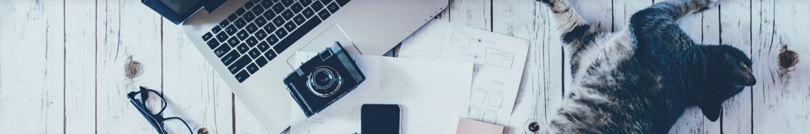
猫咪品种
一 THE CAT INFORMATION 一
-
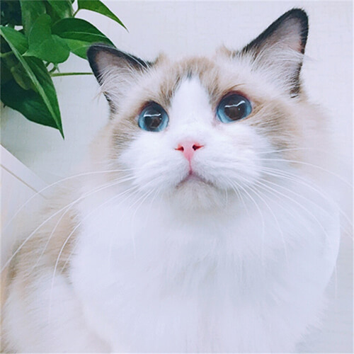
布偶猫
-
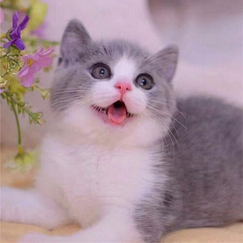
英短蓝白
-
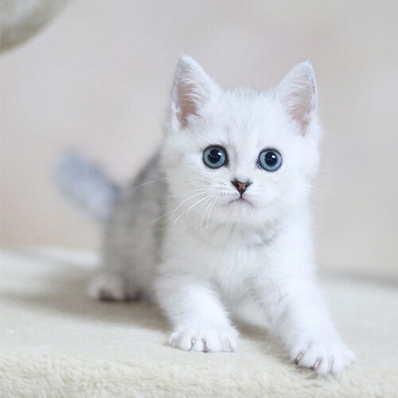
银渐层
-
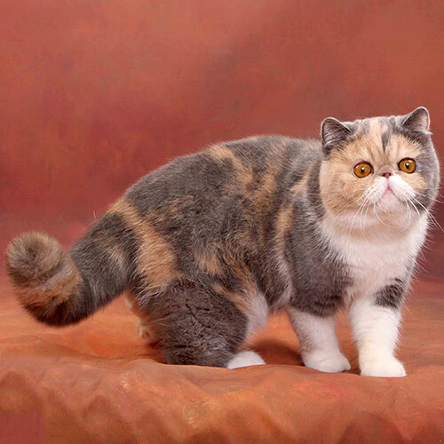
异国短毛猫
-
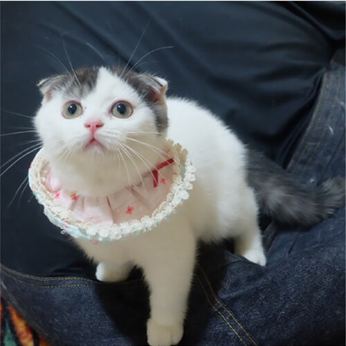
苏格兰折耳猫
-
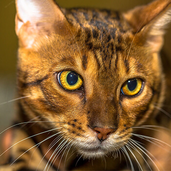
孟加拉豹猫
-
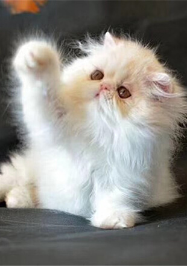
波斯猫
-
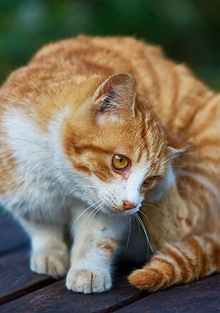
橘猫
选择猫咪新知识
一 THE CAT knowledge 一
-
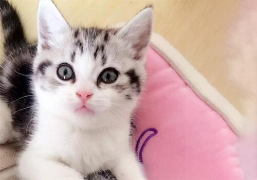
美短加白种类：相貌好看之美短加白?
流览量：85
美短加白种类：相貌好看之美短加白？美短加白是美国短毛猫中最珍贵的一种，猫咪的白色纹路还是对称的，并且整体的白色的面积超过整个身体的百分之五十，这样的美短加白是最珍贵的，品相最好的。1、美国短毛猫的外型来看，美国短毛猫体格魁伟，骨胳粗壮，肌肉发达，是短毛猫类中大型品种。美国短毛猫有其祖先勇敢和吃苦耐劳的品格。2、脸部特徵来说，美短加白的脸部最好呈现的是八字脸，整体看起来是倒V的形状，和看狗狗不一样，猫咪的鼻子的颜色最纯正的是肉粉色，美短加白看起来给人一种特别甜美的感觉。
-
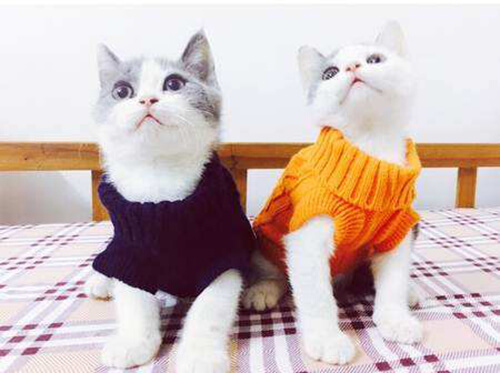
英短蓝白猫一天吃多少合适？
流览量：100
英短蓝白猫一天吃多少合适？由于猫咪品种不同它们的饮食习惯和饮食管道都不太一样，不管是什么品种的猫咪三个月以下最好不给它喂食猫粮。那么英短蓝白猫一天吃几顿饭合适？每次进餐多少合适？今天就来和大家讲一下关于英短蓝白猫饮食方面的问题。 英短蓝白因为可爱的外表吸引了很多爱猫人士的欢心，英短蓝白与英国短毛猫一样，它们平常都是昼伏夜出，囙此在凌晨和傍晚的时候，英国短毛猫会非常的活跃，饲养英国短毛猫的时候，如果要投喂食物的话，最好在凌晨或者傍晚投喂。
-
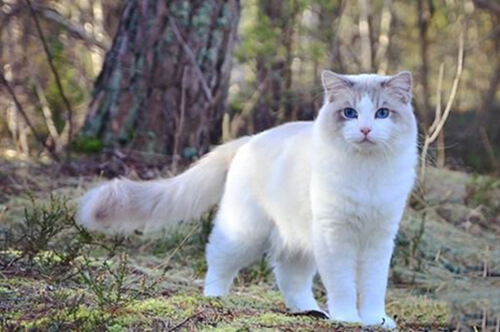
布偶猫有什么特点？布偶猫价格多少钱？
流览量：80
布偶猫有什么特点？布偶猫价格多少钱？布偶猫可以说是宠物猫中最受大家欢迎的品种了，所以纯种布偶猫价格一般都要比其他品种的猫咪贵一些。养猫就要瞭解他的价格以及性格特点，下麵小编为大家介绍一下~ 布偶猫的特点？ 1）布偶猫很安静，懒于像别的猫一样上蹿下跳，每天只喜欢静静的陪在主人身边。 2）布偶猫被人抱著的时候从不伸出指甲，不会伤害家人。